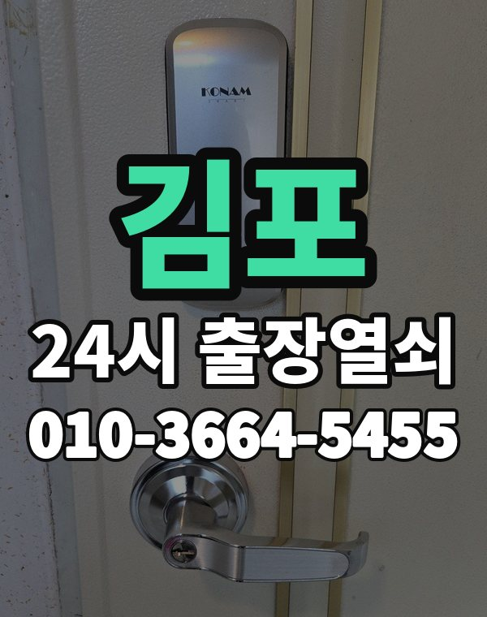

김포 출장열쇠, 이런 동네입니다
김포는 한강신도시 장기, 구래, 운양동 아파트와 사우, 풍무동, 읍면 주택가까지 이어지는 지역입니다.
신도시 아파트는 대부분 밀고 당기는 형 도어락입니다.

김포시 출장 가는 동네
- 장기동
- 구래동
- 마산동
- 운양동
- 풍무동
- 사우동
- 걸포동
- 고촌읍
- 통진읍
- 양촌읍
장기동 출장열쇠, 구래동 열쇠집처럼 동네 이름으로 찾으셨어도 같은 곳입니다.
적혀 있지 않은 동네도 김포시 안이면 다 갑니다.
김포에서 하는 일
김포 출장 부르실 때
통진, 양촌 쪽은 거리가 있어 도착 시간을 먼저 말씀드립니다.
아파트는 단지 이름과 동, 호수를 알려주세요.
장기역, 구래역, 걸포북변역, 풍무역 근처라고 말씀해 주셔도 위치 잡기가 쉬워집니다.
가까운 역이나 큰 건물, 단지 이름을 같이 알려주세요.
- 주소와 건물 이름 (아파트면 동, 호수)
- 문 종류, 번호판이 켜지는지
- 사시는 걸 확인할 신분증이나 우편물이 있는지
전화부터 작업까지 순서는 이용안내에 적어 두었습니다.
김포 출장열쇠 관련 글
- 김포 걸포동 현관문이 쾅 닫히고 삐걱거려 이웃이 신경 쓰일 때 소리 줄이는 법
- 김포 걸포동 원룸 오피스텔 출입문이 잠겼을 때 혼자 사는 분이 알아둘 것
- 김포 고촌읍 주택 현관문이 끝까지 안 닫힐 때 경첩과 도어클로저 스스로 점검해 볼 항목
- 김포 고촌읍 명절 연휴나 여행 다녀온 뒤 현관문이 안 열릴 때 대처법
- 김포 구래동 출장열쇠가 문 열기 전에 신분 확인을 하는 이유와 준비하면 빨라지는 서류
- 김포 구래동 스마트 도어락 고르는 법 지문 카드 번호 어떤 방식이 맞을까
- 김포 장기동 도어락 번호판이 꺼졌을 때 배터리부터 확인하는 순서
- 김포 장기동 부모님 아파트 도어락, 어르신 손에 맞게 설정 바꿔 드리기
- 김포 장기동 열쇠 꾸러미를 잃어버렸거나 문을 잠그고 나왔을 때 지금 할 일과 나중에 할 일
- 김포 마산동 이사 후 도어락 비밀번호 초기화와 재설정 이렇게 하세요
- 김포 마산동 맞벌이 가족 도어락 비밀번호, 아이 등하교와 돌봄까지 생각한 관리 방법
- 김포 풍무동 아이나 반려동물이 집 안에 있는데 문이 잠겼을 때 대처법
- 김포 풍무동 도어락이 삐삐 울리거나 모터 소리만 날 때 소리별로 알아보는 원인
- 김포 사우동 주택 대문과 빌라 공동현관 철문이 안 열릴 때 종류별 안내
- 김포 사우동 오래된 현관문 문틀이 처져 안 열릴 때 확인하는 순서
- 김포 통진읍 출장열쇠 부르기 전에 사진과 위치를 준비해 두면 빨라지는 것들
- 김포 통진읍 부모님 댁 도어락 점검과 어르신이 쓰기 편한 설정 안내
- 김포 운양동 푸시풀 도어락 비밀번호를 모를 때 문 앞에서 따라 할 대처 순서
- 김포 운양동 도어락 앱 연동과 알림이 안 될 때 확인할 것과 대처법
- 김포 양촌읍 주택에 새 도어락 달기 전에 재 봐야 할 문 두께와 보조키 구멍
- 김포 양촌읍 공장 사무실 상가 문이 잠겼을 때 사업장 출입문 대처법
김포 출장열쇠 자주 묻는 질문
김포 어디까지 출장 오시나요?
장기동, 구래동, 마산동, 운양동, 풍무동, 사우동 등 김포시 전 지역 갑니다. 적혀 있지 않은 동네도 김포시 안이면 출동합니다.
김포에서 밤늦게나 새벽에도 오시나요?
시간 상관없이 출동합니다. 주소를 받으면 도착 시간부터 알려드립니다.
문을 못 열면 비용을 내나요?
못 열면 비용은 받지 않습니다. 비용은 작업 전에 먼저 말씀드리고, 괜찮다고 하시면 시작합니다.
본인 확인은 어떻게 하나요?
사시는 분인지 신분증, 주소가 나온 우편물, 관리사무소 확인 중 하나로 확인한 뒤 엽니다.
김포 도어락 새로 다는 것도 되나요?
네, 문 열기와 함께 도어락 수리, 설치, 교체도 합니다. 고쳐서 되면 교체는 권하지 않습니다.